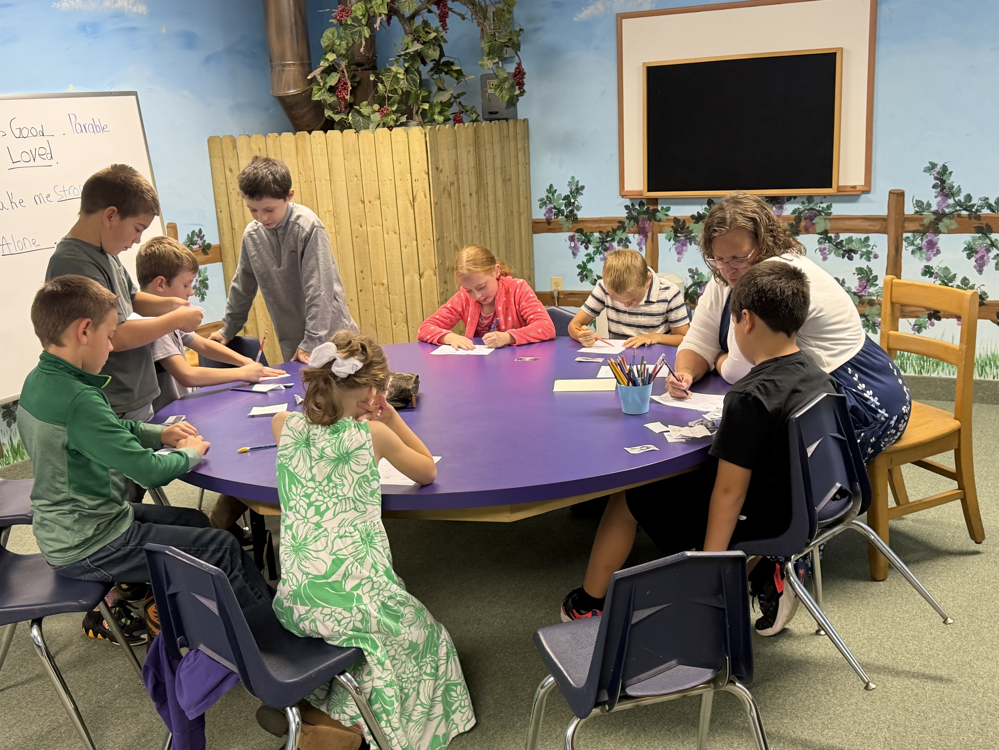
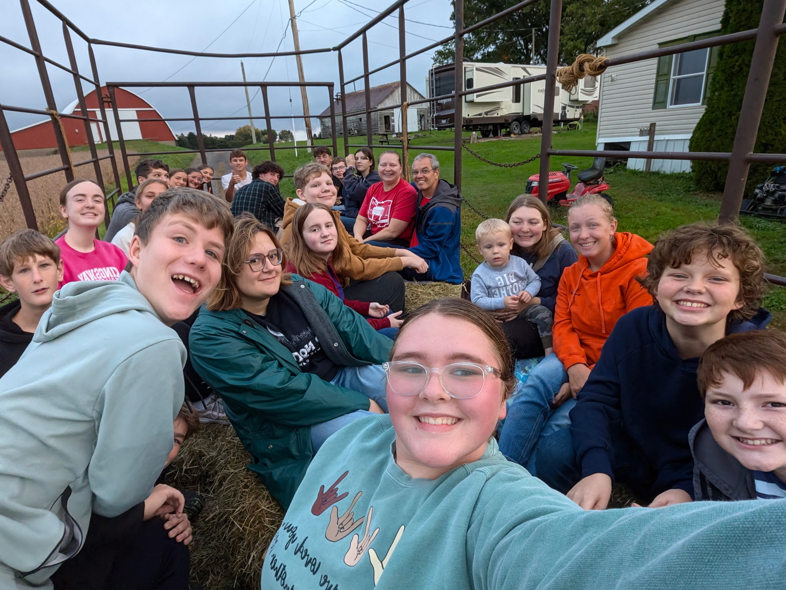
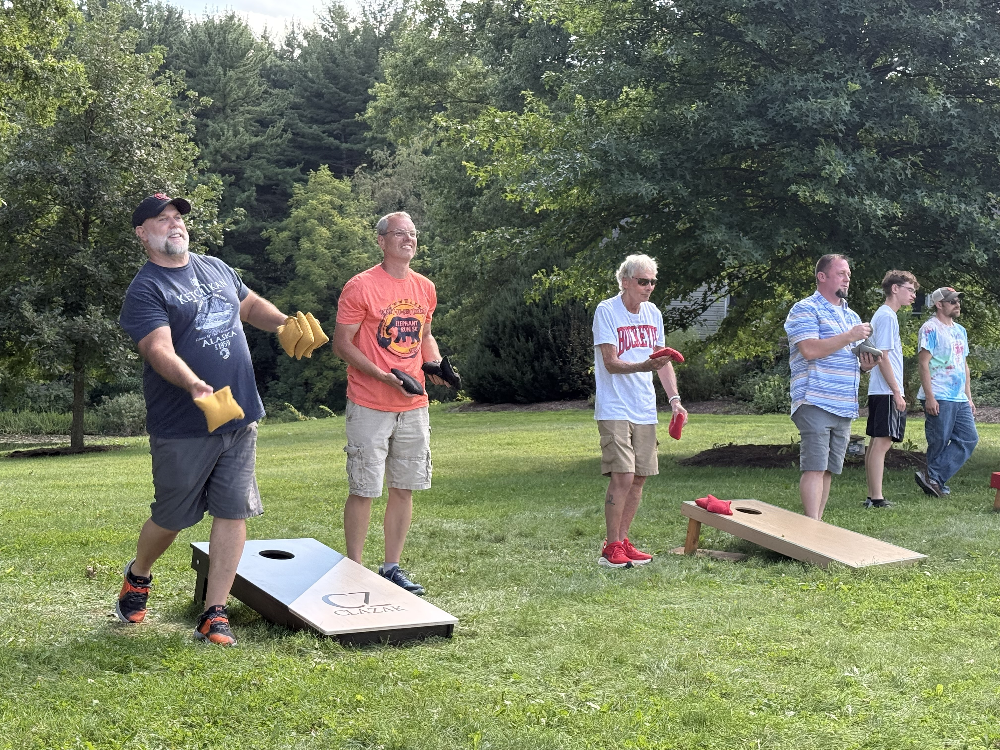
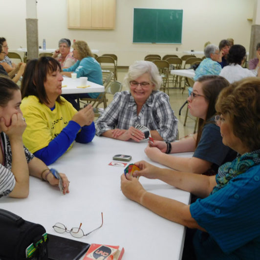
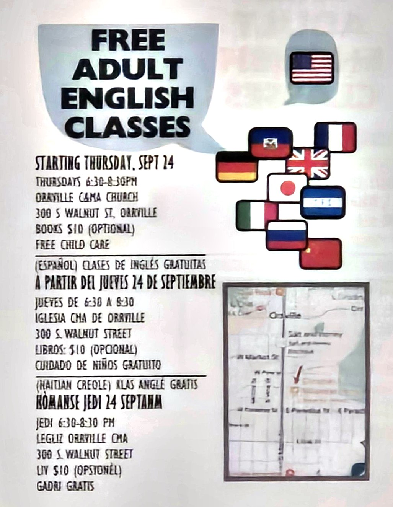

Our Ministries
Whatever your age or stage, there is a place for you to grow, serve, and belong at Orrville C&MA.
Growing Together in Christ
At Orrville C&MA, we believe that spiritual growth happens best in the context of community. Our ministries are designed to help people at every stage of life connect with God, connect with others, and contribute to the mission of the church.

Children's Ministry
Our children's ministry provides a safe, fun, and faith-building environment where children from birth through 5th grade discover who Jesus is and what it means to follow Him.
During Sunday morning worship, children are invited to participate in age-appropriate programming designed to teach biblical foundations in creative, engaging ways.

Youth Group
Our youth ministry exists to help teenagers discover their identity in Christ, build genuine friendships, and develop a faith that lasts well beyond high school.
We create space for students to ask hard questions, have fun, and grow together in community — through weekly gatherings, service projects, retreats, and more.
- Weekly youth group meetings
- Annual youth retreat
- Community service & outreach
- Sunday School class
Discipleship for Every Adult

Sunday School
In-depth Bible study classes for adults of all ages and life stages, meeting before the morning worship service.

Small Groups
Intimate community groups meeting in homes throughout the week for Bible study, prayer, and life together.

Men of the Alliance
Fellowship, accountability, and discipleship for men seeking to grow in their walk with God and leadership in their homes.

Women of the Alliance
A community of women gathering for Bible study, prayer, encouragement, and service opportunities throughout the year.

Corporate Prayer
Regular prayer gatherings and prayer teams available to intercede for the congregation, community, and the world.

Golden Life Ministry
Fellowship, encouragement, and spiritual growth for our senior members — a valued and cherished part of our church family.

English as a Second Language
Orrville C&MA offers free adult English classes for neighbors who are learning English as a new language. Everyone is welcome.
Free child care is provided during class so parents can attend.
Español: Clases de inglés gratuitas · Jueves de 6:30 a 8:30 · Iglesia CMA de Orrville · 300 S. Walnut Street · Libros: $10 (opcional) · Cuidado de niños gratuito
Kreyòl Ayisyen: Klas Anglè Gratis · Jedi 6:30–8:30 PM · Lègliz Orrville CMA · 300 S. Walnut Street · Liv $10 (opsyonèl) · Gadri gratis
Missions: All the World
We are actively engaged in global missions through the C&MA, supporting International Workers in West Africa and participating in our Annual Missions Conference.
Explore Missions Get Involved